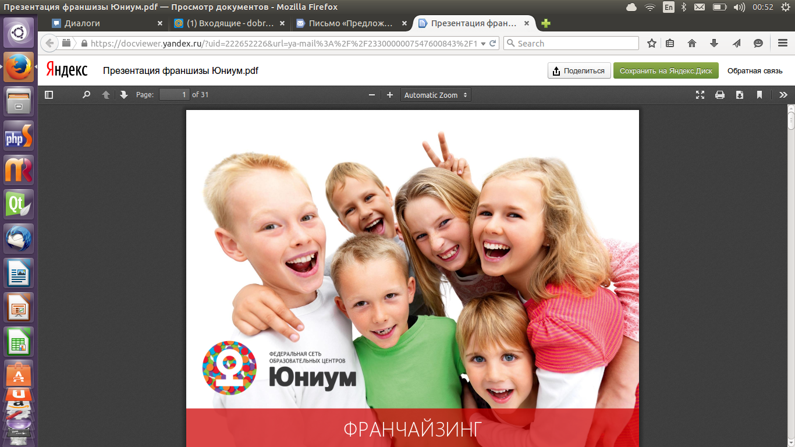
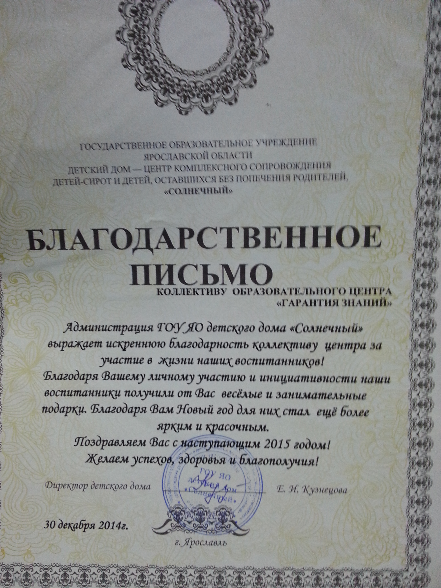
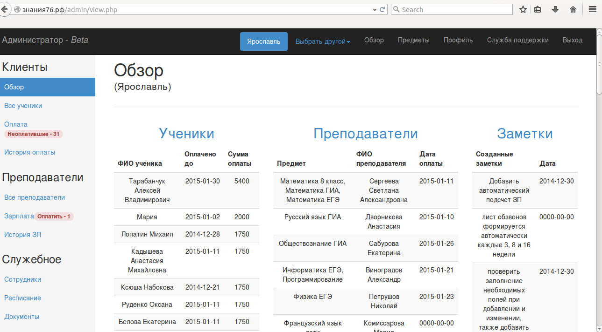

Как продвинуть сайт в топ
Эта статья не претендует на затмение профессиональных пособий по продвижению сайтов или на возможность полного отказа от платного продвижения, я всего лишь расскажу о том, как я выводил свой образовательный центр «Гарантия Знаний» в топ по ключевым запросам в Ярославле. Если вы введете в поиск: «курсы егэ в ярославле», «курсы гиа в ярославле», «курсы программирования ярославль» или «курсы робототехники ярославль» то обязательно попадете на страницу нашего образовательного центра, если не по прямой ссылке, то через ссылки на других сайтах точно. И так будет происходить на первых 3-5 страницах поисковой выдачи яндекса и гугла. Как собственно добиться этого и постараться занять максимум интернет пространства в своем регионе (краткое пособие): 1. Используйте все доступные доски объявлений. Конечно размещаться на очень ущербных не стоит, но основную массу из них надо занять по своему региону. Создайте прекрасное объявление (в нем обязательно должны присутсвовать: ссылка на сайт, ключевые слова продвижения и неплохо добавить название компании). А дальше просто публикуйте и публикуйте пока силы не иссякнут. Конечно, обязательно использовать надо лишь доски объявлений для своего региона, иначе это все потеряет смысл. Некоторые примеры, чтобы не искать: http://kursyobucheniya.ru/ http:/sopta.ru http://freeadsin.ru/ http://russgo.com http://gde.ru http://kupiprodai.ru/ http://.doski.ru http://propokupki.ru/ 2. Правильно определите ключевые слова для страниц своего сайта. Если на странице идет описание про курсы программирования, то и используйте верные ключевые слова: курсы програмирования, кружок программирования для школьников, программирование в Ярославле и так далее. Не стоит на такую страницу добавлять ключевые слова вида: нарисовать дизайн клевые фотографии фотошоп обрабатыавть винкс (это кстати совершенно реальные ключевые слова одного очень крупного всероссийского образовательного центра на странице курсов программирования). Также очень важно сделать описание для странц, чтобы яндекс и гугл показывали пользователям значимую информацию, а не набор букв. 3. Ну и, конечно же, не забывайте про самый сложный, но очень очень продуктивный способ: продвижение по статьям. Я использовал в основном такие биржи статей как: http://pisali.ru http://www.rusarticles.com http://grafoman.net/ http://fb.ru/ http://каталог-статей.рф/ http://www.chtata.com/ Таких бирж невероятно много и они дают очень хорошую популярность Вашему сайту. 4. Еще достаточно модным является покупка ссылок, но я к сожалению данный метод неиспользую в связи с недоверием (лично свои убеждения) Моя уверенность в вышеописанном подтвердилась словами одной моей клиентки (которая кстати занималась на наших курсах в течение всего года): «мы пришли к Вам, потому что не смогли в интернете найти другие образовательные центры в Ярославле». Для меня это было очень приятным высказыванием=) К сожалению, самостоятельное продвижение у меня заняло уйму времени. На протяжении года примерно три раза в неделю я публиковал описание на всех подходящих сайтах, но оно того стоило. Успехов всем в продвижении, а прочитавших прошу оценить те сайты, которые я продвигал: знания76.рф и знания77.рф (этот продвигаю сейчас). Буду очень признателен за грамотный фидбэк.
27 июня 2015
Франчайзи от Юниума
Заслуженное письмо с предложением о сотрудничестве от Юниума. Когда то на них работал, а теперь предлагают стать партнером. Но я не буду, это скучно и не очень интересно, да и тем более опять иметь начальника - это не мое!
10 июня 2015
Я активное дерьмо!
"Которое мало зарабатывает"© Венчурный фонд ПСБ
28 мая 2015
Как продвигать образовательный центр?
Мне кажется, это один из наиболее частых вопросов, которые я задаю себе в последнее время. Я обыскал уже весь интернет, чтобы получить хоть чуток информации, но все бесполезно. Видимо это тот бизнес, в котором надо идти по углям, и лишь опытным путем выяснять какие угли дают отдачу. Ежедневно мне звонят всякие дебильные агенства, которые хотят впарить свою платную рекламу, и Вы знаете, если Вам звонят, значит это агенство - фуфло. Для продвижения я все также выбираю рекламу на остановках и директ.
И Вы знаете отдача есть! Я потихоньку завоевываю авторитет на рынке образовательных услуг в Ярославле. Осталось придумать как победить в конкуренции с многовековыми ВУЗами, предлагающими свои услуги. Но я пытаюсь, я рекламюсь по их запросам, по их сайтам, и это дает некий эфффект. Уже сейчас ко мне поступают звонки от клиентов, которые хотят записаться на курсы с сентября, когда на дворе март. Меня это радует. Меня радует, что я делаю нечто доброе и крутое, но поистенне тяжелое!
7 марта 2015
Анализ конкурентов
В один прекрасный момент я решил, что хватит сидеть и тупить, и пора бы начать раскачивать бизнес по-нормальному. Выбор я, конечно же, сделал в сторону Москвы. Чтобы упростить свое продвижение, я решил выбрать для Москвы лишь курсы робототехники, программирования и ЕГЭ/ГИА, но и тут оказалось все не так просто!
Поизучав с помощью бесплатных сервисов своих конкурентов я понял, что рекламятся то они достаточно неплохо: 200-300 уникальных объявлений по директу, и я со своими 22(((...это было печально и вот начал я потихоньку обновлять объявления, надеюсь, что закончится все это успешно, и я смогу первого сентбря 2015 года объявить о новом офисе в Москве=)
16 февраля 2015
Первый учебный день, после праздников
В этот день я приехал чуть пораньше, чтобы побеседовать с новой преподавательницей, которую мне предложили. В принципе все нормально, и я в принципе ей доволен, посмотрим как будет дальше. Я привел своего брата на курсы программирования, дал преподавателю некие указания и пошел отдыхать в течение часа.
Знаете, мои ожидания на этот день не оправдались. Клиенты звонили, извиняясь, что не смогут придти сегодня, но обязательно придут на следующей неделе. Это меня радовало. Но большую радость принесла клиентка, которая хотела оплатить два курса сразу на 4 месяца вперед. Это было восхитительно!
Позвонив клиентке (она также сказала, что первое занятие дочке понравилось), чтобы сообщить ей точную сумму, я все же порекомендовал ей оплатить сначала месяц занятий, а лишь потом и оплатить 4 месяца. Я сделал это для того, чтобы клиентка была точно убеждена, что ей понравятся занятия(это как никак моя цель=), и чтобы я был потом спокоен за полученные деньги.
11 января 2015
Приглашение записавшихся клиентов после праздников
Утро 9 января у меня началось со звонка довольно позитивной клиентки. Честно говоря, я не сразу осознал, что она хочет, но быстро ответил на ее вопросы и сообщил, что ждем ее в воскресение на математику ГИА.
Далее все пошло гораздо интереснее. Этот день перед выходными я отвел на обзвоны клиентов, которые записались на курсы до праздников. Но очереденой раз я подтвердил свою теорию, что люди сами не знают, что им нужно.
Я дозвонился до 5ых клиентов (3 - ГИА и 2 - Робототехника). Уже по интонации я осознал, что я могу ожидать лишь одного реального клиента к себе на курсы. Одна сослалась на праздники и сказала, что возможно оплатит по занятиям т.к. после праздников денег не осталось. А одна бабушка ребенка даже начала рассказывать мне о "столь интересных" талантах своего ребенка и причины, по которым он не будет ходить.
В принципе большего я не ожидал. В связи с упавшей платежеспособностью людей и кризисом я пока думаю, что стоит держать стабильность и улучшать качество существующих клиентов, вкладывая минимум средств в поиск новых.
9 января 2015
Благотворительность 2014-2015
Уже давно я мечтал о том, чтобы стать благотворителем, и год 2014 я решил завершить именно этим.
Почитав в интернете о благотворительности в детские дома, я думал, что, возможно, все будет не так просто, но на неделе не сложно учесть все советы, даваемые интернет-сообществом.
Без особых затруднений я нашел адреса детских домов Ярославля и с огромным удовольствием побеседовал с управляющей по поводу подарков детям на новый год.
Даже опубликовал в вк статейку:.
Как известно, Новый Год - это семейный праздник. Это самый веселый день. День, когда исполняются все мечты. Помните,как в детстве мы писали письма Деду Морозу, оставляли ему печеньки под елочкой и всем сердцем верили в него? А как, проснувшись1 января, первым делом бежали к нарядной домашней ёлке, под которой лежали такие долгожданные подарки? Всё это замечательно, но что делать деткам, у которых нет этого "Деда Мороза", который заберет письмо, который выполнит все пожелания, и благодаря которому первого января под елкой появятся подарки? К сожалению, дети из детских домов не могут сидеть в кругу своих мам и пап, вместе кушать салаты и загадывать желания, но они, как и мы, тоже нуждаются в празднике. Поэтому мы решили создать им этот праздник, внести частичку доброты в этот мир! Наш образовательный центр в этом году станет "Дедом Морозом" для одного из детских домов Ярославля, и мы готовы принять Вашу помощь! Если у Вас дома лежат ненужные, но в хорошем состоянии детские книги, журналы, раскраски, сканворды, различные настольные игры и т.д., или Вы готовы потратить 100-200 руб, чтобы купить это в любом магазине и устроить детям настоящий праздник, то мы будем рады принять все эти вещи в нашем образовательном центре вплоть до 29 декабря по адресу г. Ярославль, Салтыкова-Щедрина д.21 оф.412. ДАВАЙТЕ ДЕЛАТЬ ДОБРО ВМЕСТЕ! P.S.: преимущественно, детям из детского дома требуются раскраски, развиващие игры, носки и колготки=) P.Р.S.: никакой рекламы не будет, это делается от всей души!
На деле, конечно, никакой помощи от людей не было, и в завершение года я сам закупил детям подарки.
С огромным удовольствием принес все в детский дом и в замен получил вот такое письмо:
30 декабря 2014
CRM - система управления взаимоотношениями с клиентами
Со временем я понял, что следить за оплатой 10 школьников реально, а вот успеть проследить за всеми 20-30 школьниками и ничего не забыть практически невозможно. Поэтому я уже в первый год работы начал создавать некое подобие CRM системы.
Первая CRM была написана мной на c++ под qt. В принципе со своей функцией она справлялась, но все программа сводилась к работе с текстовым файлом, что заметно усложняло работу.
При написании второй CRM, я поступил умнее. Я создал БД и все функции реализовал на php, оформляя все при помощи фреймворка bootstrap. Получилось довольно неплохо, да и функций я добавил гораздо больше. Вот что получилось в итоге:
 Переработанная система управления клиентами, написанная на php с использованием mySql .На сегодняшний день я использую именно эту CRM, она для меня удобна, да и не составляет особых трудностей перебросить часть работы на своего администратора.
1 декабря 2014
Это трудно. Неудачное завершение первого учебного года
Мне пришлось прекратить курсы 15 мая, за две недели до официального завершения цикла занятий, чтобы не понести большие финансовые потери.
Далее все пошло гораздо интереснее. Этот день перед выходными я отвел на обзвоны клиентов, которые записались на курсы до праздников. Но очереденой раз я подтвердил свою теорию, что люди сами не знают, что им нужно.
Я дозвонился до 5ых клиентов (3 - ГИА и 2 - Робототехника). Уже по интонации я осознал, что я могу ожидать лишь одного реального клиента к себе на курсы. Одна сослалась на праздники и сказала, что возможно оплатит по занятиям т.к. после праздников денег не осталось. А одна бабушка ребенка даже начала рассказывать мне о "столь интересных" талантах своего ребенка и причины, по которым он не будет ходить.
В принципе большего я не ожидал. В связи с упавшей платежеспособностью людей и кризисом я пока думаю, что стоит держать стабильность и улучшать качество существующих клиентов, вкладывая минимум средств в поиск новых.
15 мая 2014
Первая рекламная компания
Первая рекламная компания прошла достаточно гладко, ели не обращать внимание на то, что я лишние 10к ввалил в дебильную рекламу в автобусах. Директ был эффективен на 45%. Правда многие отказывались учиться, в следствие малого времени нашей работа или нашего местоположения.
Итоги/выводы:
- Нужно стараться планировать все наперед и просматривать все возможные развития событий
- Необходимо очень четко следить за перемещением средств
- Преподавателям
1 сентября 2013
Поиск помещения, сотрудников и регистрация
Помещение. Я собрал номера всех школ Ярославля и обзванивал их, предлагая стать моей площадккой для занятий. Кое-как нашел школу, и это работали мы с ними по левой схеме при помощи договора благотворительности. Меня соврешенно перестала устраивать это школа, когда на меня орала директор за то, что мы передвинули ножницы на столе. Обычные, б****, ножницы. Я понял, что в этом помещении больше не останусь.
Поиск сотрудников. Тут все оказалось гораздо проще, правда с преподавателями по русскому не задалось. На меня в первый же год работали уникальные люди: аспиранты ВУЗов, выпускники, даже кандидат наук. И это все, когда мне лишь 19 лет. Я был в восторге!
Регистрация ООО. Я выбрал эту форму в связи с более легкой и дешевой регистрация. Сам себя я защищал тем, то мы даем консультации, а не обучаем детей(лицензированная область), но это честно говоря полнейшая хрень!
Итоги/выводы:
- Никогда не связывайтесь с государственными заведениями в коммерческом плане!
- Нанимайте только лучших сотрудников и давайте им все блага, если платите мало (1600 в месяц, за 12 ак.часов занятий;)
- ООО регистрируйте сами! Уставов в интернете множество, и разобраться со всеми необходимыми документами сможет даже обезьяна.
9 августа 2013
Начнем пожалуй
Здравствуйте! Меня зовут Квасов Артем. Я являюсь создателем данного проекта. В 2011 году я закончил школу с золотой медалью и на настоящий момент учусь в Научно - Исследовательском Ядерном Университете "МИФИ" на специальности "Математическое обеспечение систем".
Мое увлечение математикой началось с 5 класса. Уже тогда я выступал на многих олимпиадах. С 8 класса я помогал школьникам старших классов подготавливать различные проекты, как видео, так и презентационные.
В 9 классе, на протяжении года, я работал журналистом в местной газете, что объясняет существование курса по Русскому языку в моей школе "ОК". А в 11 классе передо мной, как и перед многими школьниками, встал вопрос подготовки к ЕГЭ.
Я живу в Ярославской области и, честно говоря, не знал куда податься. Я не знал каким способом готовиться к этому экзамену. В интернете предлагалось множество вариантов: изобилие онлайн - курсов и преподавателей, которые мало того, что за свои услуги берут неимоверные суммы, так еще и подготовка оставляет желать лучшего. Я воспользовался услугами одной онлайн-школы, бесполезно растратив деньги (преподаватели этой школы успешно забыли обо мне, как только я оплатил их курсы). В конце концов, пришлось готовиться к ЕГЭ своими силами. В результате я поступил в очень престижный ВУЗ.
В 2012 году, на протяжении полугода занимался репетиторством (преподавал информатику студентам первого курса своего ВУЗа, будучи сам первокурсником). В сентябре 2012 года я решил выйти на новый уровень - стал преподавателем математики в одной очень крупной фирме.
Будучи студентом второго курса я решил сам создать курсы, действительно стоящие, которые будут доступны для любого человека как из регионов, так и из крупных городов.И уже в декабре 2012 года в свет вышла Онлайн - Школа "ОК", которая прекрасно сочетает в себе цену и качество. Я стараюсь, чтобы на этих курсах школьники действительно получали знания. Я предлагаю лишь УНИВЕРСАЛЬНЫЕ ЗНАНИЯ - те которые не дают в школах. Мало кто из Вас слышал о существовании теоремы Пика, о решении задач по стереометрии с помощью матриц, о написании сочинения, обладая минимальным запасом литературных аргументов - а ведь имея эти знания писать ЕГЭ и ГИА становится гораздо проще! Я хочу, чтобы ни для одного школьника обучение в моей школе не прошло зря, как это было когда - то со мной.
Проблема подготовки к ЕГЭ актуальна, и я прикладываю все усилия, чтобы данные курсы помогли Вам сдать экзамены на максимальный балл.
Мой телефон для связи: 8(915)176-12-87
Почта: dobriy_zhuk@bk.ru
Так выглядел мой первый блог, который я разместил на блоггере. Также данную статью я положил на свой сайт курсок.рф (первый сайт образовательного центра), что в последствии посчитал глупым, как и название
Курсок.рф
Именно так я изначально планировал назвать эту компанию. Более того я хотел сделать ее онлайновой.
В свободное время я составлял лекции в вордовском формате, они были печальные, но я старался сделать их красивыми. Акцент я делал на то, что эти лекции будут продаваться, и ученики будут взаимодействовать с ними через сайт. Если бы я тогда, хоть что-нибудь понимал в сайтосоздании, я бы даже постыдился выкладывать свою систему, написанную на Joomla во всемирную сеть. Но как никак опыт всегда полезен...
Так вот. Не говоря никому и ни с кем не советуясь 15 января я вылил сайт с доменом курсок.рф во всемирную сеть. Конечно же у меня не было посетителей, потому что я понятия не имел как их приглашать. Я стал думать на ком бы испытать эту систему и попробовать продать ее. Выбор пал на моих друзей (выбор не самый лучший, но я хотел попробовать)
Прикрываясь работой в крупном образовательном центре и говоря, что это не моя система я смог продать эти курсы за 2000 руб. Что довольно эгоистично было с моей стороны.
Создав фейковых людей, я беседуя со своими друзьями по почте, провел им полный курс мною созданных лекций и успешно завершил цикл. Вроде все было хорошо и я остался собою доволен. Как раз близился март/апрель и продвигать систему дальше я стал используя рассылку по группам ВК.
К сожалению, это все не прошло для меня так легко, как я думал...девушка, с которой я расстался, быстренько выдала мою тайну друзьям...последовали небольшие обиды, но я оч рад, что они оказались не критичными...
В этом же году, я поехал на образовательный форум "Селигер", где немного доработав идею и полностью переведя свои курсы в оффлайн режим, я выступил перед экспертами-предпринимателями. Их отзывы мне понравились, единственное, что мне сказали изменить, так это название...на данный момент я с ними согласен. Так появилась в свет "Гарантия Знаний".
NB: всегда удаляйте старый домен, либо очищайте всю информацию из поисковых систем! Однажды я зашел по старой памяти на сайт "курсок.рф" и увидел в точности такой же сайт, который создавал сам, только со старым адресом расположения. Меня это немного напугало, но я думал, что это не критично, и люди будут прежде звонить, чем идти по адресу. Я ошибся и из-за этого потерял клиента, который хотел заниматься у меня на курсах.